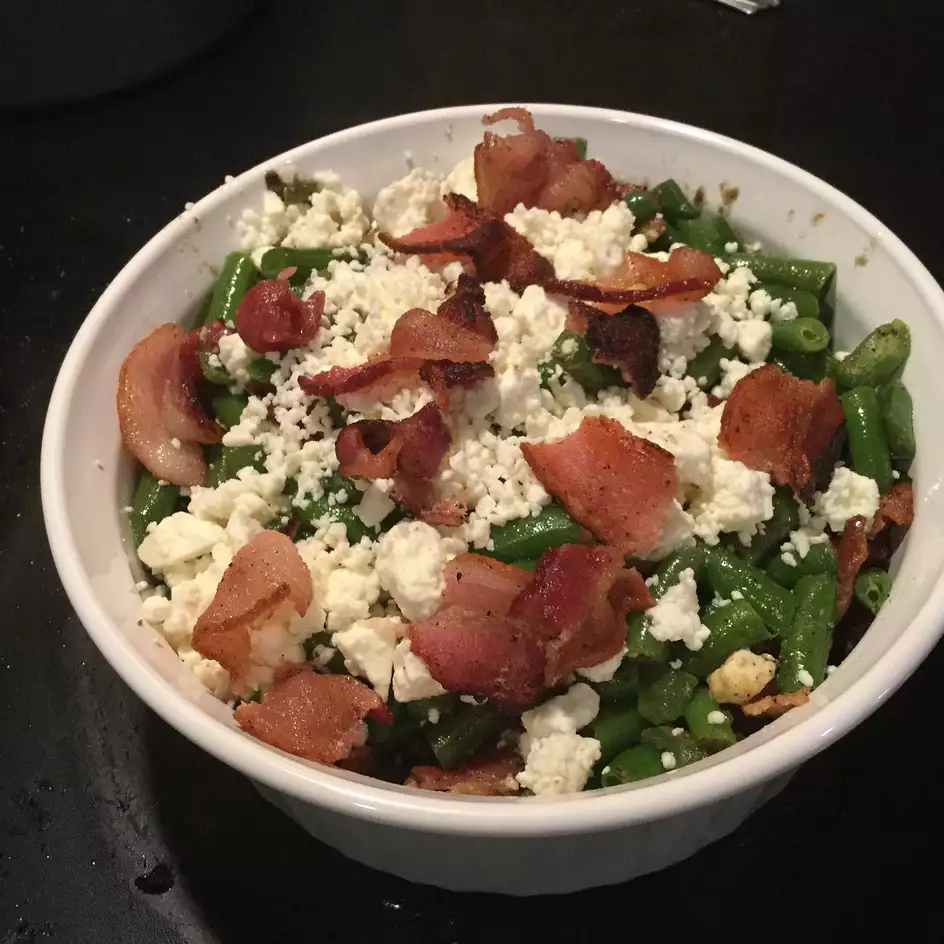

Bacon Feta Beans

Description
This is a nice green bean dish for company that's low carb, too. Reheats nicely for leftovers.
Ingridients
- 8 slices bacon - cooked, crumbled and divided
- 1 (16 ounce) package frozen cut green beans
- 1 teaspoon minced garlic
- 4 ounces crumbled feta cheese, divided
- ½ teaspoon onion powder
- ⅛ teaspoon ground black pepper
- 2 tablespoons water
- Place bacon in a large, deep skillet. Cook over medium high heat until evenly browned but only slightly crisp. Drain grease, leaving a small amount in the skillet for later use. Crumble bacon, reserving 2 tablespoons for garnish, and set aside.
- Cook frozen beans in a covered, microwavable dish for about 3 minutes until thawed, but not fully cooked. Drain liquid, pat dry, and set aside.
- Reheat skillet with residual bacon grease over medium-high heat. Stir in bacon and garlic until garlic is lightly golden. Add green beans and feta cheese, and season with onion powder and black pepper. Cook and stir until most of the feta cheese has melted, about 2 minutes. Transfer to a serving dish, and garnish with remaining feta cheese and crumbled bacon. Serve hot.
Home